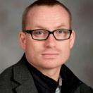
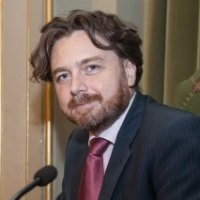
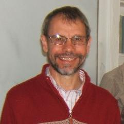

Ebrahim Momoniat (University of the Witwatersrand)

Robert Weiss (Virginia Polytechnic Institute and State University)

Luca Gerardo-Giorda (Basque Center for Applied Mathematics)

Nigel Bishop (Rhodes University)
Robert Weiss (Virginia Polytechnic Institute and State University)
Tsunamis from Asteroid Impacts and Submarine Landslide: Numerical Simulations of the Loudest and Quietest Tsunami Hazards
Tsunami waves generated during asteroid impacts into oceans and submarine landslides create waves whose characteristics (wave period and amplitude) is significantly different from those generated by more common tsunami sources, such as earthquakes. Earthquake-generated tsunami waves at least are 20 times longer than the ocean depth. Tsunami waves generated by asteroid impacts or submarine landslides are not; they are shorter, but often exhibit much larger amplitudes. Due to the difference in wave period and amplitude, tsunami waves generated by asteroid impacts and submarine landslide experience physical processes, such as dispersion, that require higher-order derivatives in the governing equations to simulate the respective physical processes. Obviously robust and stable numerical solutions of governing equations with higher-order derivatives require smarter numerical methods and stronger computational resources. While I am going to touch upon these issues in my talk, I will focus on the generation mechanisms of tsunami waves by asteroid impacts and submarine landslides. I will introduce the physical processes that govern the characteristics of both generation mechanisms, present examples where they unleashed their destructive power, and introduce a numerical tool to simulate both processes for tsunami simulations to present some quantitative analysis.
Luca Gerardo-Giorda (Basque Center for Applied Mathematics)
Some Mathematical and Numerical Aspects of Brain Activity Modeling
Among the most complex problems in Biomedical science, understanding the functioning of human brain is still
one of the biggest challenges of science. Several dynamics coexist in a working brain, each more or less
understood in its own, from the electrophysiological activity of the neurons, to the metabolic cycle of the
neuron-astrocyte complex and the blood flow in the circulatory system of the Circle of Willis.
In order to draw a more comprehensive and coherent picture of the working human brain, computational models are
today more relevant than ever.
In this talk I will discuss the modeling (and associated challenges) of the local electro-metabolic dynamics in
the neuron-astrocyte complex, and the macroscopic propagation of the Cortical Spreading Depression (CSD).
The former is a lumped model, coupled through a feedback process of energy supply/demand, that is inherently multiscale
due to the different temporal scales of the electrophysiological and meatbolic dynamics.
The second is a distributed model, describing the progression, from the visual cortex to the peripheral areas, of a
depolarisation wave that has been deemed a correlate of visual aura, a neurological phenomenon preceding migraine.
As of today, little is known about the mechanisms that can trigger or stop CSD, but the complex and highly individual
characteristics of the brain cortex suggest that the geometry might have a significant impact in its propagation.
I will introduce patient-specific computational models to cope with variability and anisotropy of cortical geometries, and
discuss our simulation results highlighting the importance of model personalization.
Ebrahim Momoniat (University of the Witwatersrand)
Sliding contacts for thin films on a cylindrical coordinate system
In this talk I derive a Reynolds equations for chemical mechanical polishing (CMP) and pin-on-disk testing from the Navier-Stokes equations. Coriolis force effects are included in the derivation of the model equations. Half-Sommerfeld boundary conditions are imposed on the numerical solutions of the model equation. The results will be discussed and their implications to the industrial processes of CMP and pin-on-disk testing discussed.
Nigel Bishop (Rhodes University)
The Numerical Calculation of Gravitational Waves
Einstein's equations form a nonlinear system of hyperbolic partial
differential equations, and can be solved exactly only in cases of
high symmetry. As a first step towards obtaining numerical solutions,
the equations need to be recast from 4-dimensional form into one where
the evolution is explicit. There are various ways of doing this,
developed in the 1960s and subsequently. The numerical method applied
to these equations has normally been finite differencing, but recently
spectral methods have been widely used for certain types of problem.
The numerical solution of Einstein's equations requires substantial
computer resources, and so in practice such methods are used only
outside the weak-field limit when there is no alternative. This
includes the most powerful burst sources of gravitational waves, such
as supernova explosions and compact object coalescence, where compact
object can be either a black hole or a neutron star.
Participants
Abdul Hamid Carrim (University of the Witwatersrand)
Faisal Javaid
Oluwamuyiwa Gabriel Olupitan (Achievers University)
Mayowa Michael Ojo (Ladoke Akintola University of Technology)
Olusegun Babatunde Ojewola (Ladoke Akintola University of Technology)
Samuel Nuugulu (University of the Western Cape)
Innocenter Amima (African Institute for Mathematical Sciences)
Olumuyiwa Olupitan (Achievers University)
Segun Oke (Univeristy of Zululand)
Mozzamil Mohammed Abdalla Mohammed (Stellenbosch University)
Oluwaseun Francis Egbelowo (University of the Witwatersrand)